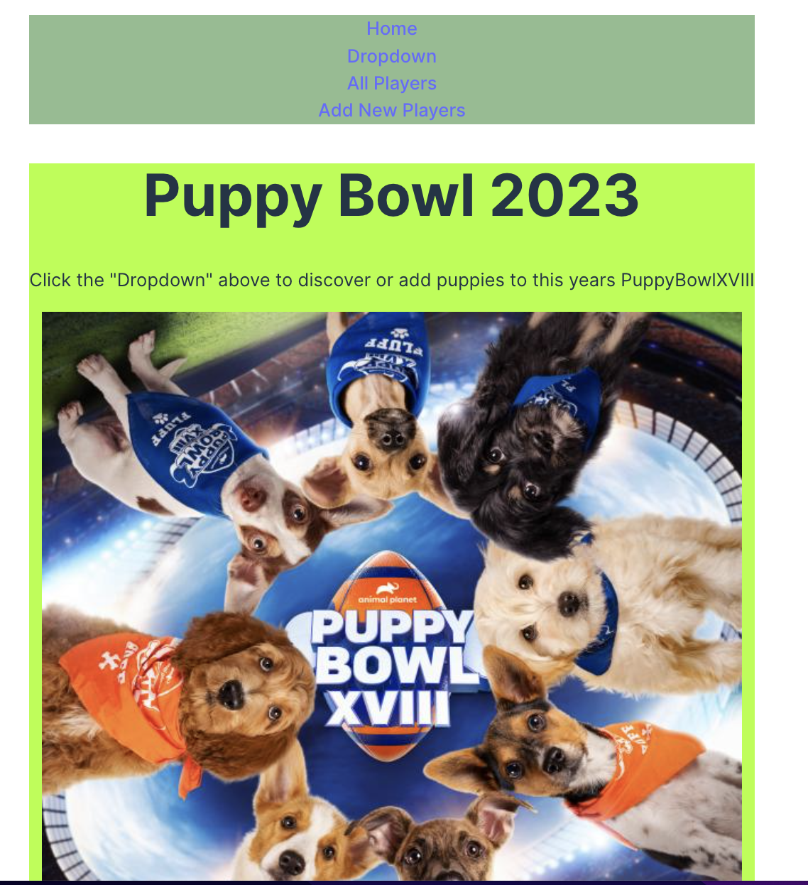

Stranger Things

Recently, I delved into the coding realm and concocted a project that gives a cool twist to Craigslist. Armed with JSX and React.js, seasoned with CSS finesse, I crafted a virtual masterpiece. Bootstrap stepped in for that sleek touch, and the grand finale? Deploying it all on Netlify for that extra touch of magic. Oh, and let's not forget the secret sauce—incorporating an API from our boot camp to elevate the user experience.
Sure, wrestling with token authentication was a challenge, like navigating a digital maze. But hey, patience is key. As time passes, I'm confident that taming those tokens will become second nature. The secret? Keep at it, one code line at a time.
And here's the twist: While the project isn't entirely finished, it's already a blast! I'm treating it like a canvas that I'll revisit to add more layers of awesomeness. The journey's just begun, and the fun's far from over!
Puppy Bowl
Picture this: a coding escapade filled with JSX, React.js, and the exhilarating thrill of deploying to Netlify. The mission? Create a virtual front-row seat to the Puppy Bowl of 2023. Yes, you heard it right—puppies galore! You could dive into the roster, search by name, and even recruit your own players, strategically deciding who's field-bound and who's warming the bench for the season.
Now, the real tale of triumph lies in overcoming the colossal obstacle of getting those individual player details to dance perfectly on the screen. Hours of frustration, a sprinkle of sweat, and just when the code stars aligned, I couldn't help but exclaim with sheer glee. Victory tastes sweeter after a dance with the coding gods!
E-Commerce Capstone
In my latest project, I delved deeper into the realms of JSX and React, implementing authenticated tokens for our API users. This allowed logged-in users to seamlessly shop, while those without a login could still explore, shop, or opt for a quick sign-up.
The main hurdle this time? Navigating token authorization after authentication. Thankfully, the incredible mentors I had were there to guide me through the process.
Here, you could explore detailed product information, including inventory count and price. Filter items by category or effortlessly search by name—a user-friendly experience tailored just for you.